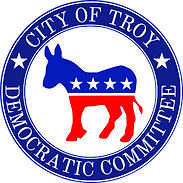

October 1, 2026 | Troy City Council
Agendas: Finance | Public Hearing | Regular. Proceedings below are from the meeting transcript; vote titles are verified against the clerk's minutes.
The council gave Local Law 3 final approval, 6-0. It sets Troy's first written rules for the city's license plate reader cameras, run by the vendor Flock. Most residents who spoke still want the cameras gone. Council President Sue Steele said ending the Flock contract isn't in the council's hands until its lawsuit against Mayor Mantello over that contract is settled, so the law puts guardrails in place now. The council also passed a property tax break for permanently and totally disabled veterans, 6-0.
Two money items from the Mantello administration reached council members only hours before the vote, Council Member Shikole Struber said. She and Council Member Jona Favreau abstained because they hadn't had time to read them. The comptroller said he had held the items back, called it his error, and apologized. In the last public forum, firefighters described three fire deaths in a single week and asked the council for help getting longer-lasting smoke detectors into Troy homes.
Chair: Council President Steele. Called to order at 6:30 p.m. Council Member Greg Campbell-Cohen absent (ill). In attendance: Mayor Carmella Mantello, Deputy Mayor Seamus Donnelly, Comptroller Michael McNeff, Head of Finance and Personnel Gabrielle Mahoney. About 20 members of the public attended. Adjourned at 6:53 p.m. No one spoke during the Finance public forum.
Steele opened by adding two items to the agenda by unanimous consent, meaning no member objected: Ordinance 46, a change to the 2026 Water Fund budget, and Resolution 96, waiving a 60 percent residency rule for the 2026 East Side Seniors Grant.
Struber said both items reached council members "mere hours ago." She hadn't had time to read them, she said, and doubted the public had either. She and Favreau abstained. Comptroller McNeff said he held the budget change back so he could present it with the related grant. Steele pointed out that the grant itself came through Finance two weeks earlier. McNeff called it his error and apologized. Both items passed 4-0, with two abstentions.
Council Member Kathleen Spain-McLaren explained that an abstention is not a no vote. It means a member didn't have enough information to cast one.
Resolution 93 adopts the 2025 Rensselaer County Hazard Mitigation Plan, the county's plan for reducing damage from floods, storms, and other disasters. Spain-McLaren asked why Troy was only now adopting a 2025 plan. An administration official said each town and city adopts the plan as the last step of a multi-year county effort, and that Troy is not late and is still eligible for Federal Emergency Management Agency (FEMA) funding.
Spain-McLaren then read from an email by the director of the county's Bureau of Public Safety. The county sent its request last fall and was "hitting brick walls," the email said. Cities that haven't adopted the plan can't get state or federal money for projects in it, and the county can't be paid back for building the plan until at least half the participating towns and cities adopt it. Troy was one of the few that hadn't.
Struber noted that Troy's engineering department was the only city contact listed in the plan, while most towns and cities listed their mayor or deputy mayor. She also asked whether the next budget will include the emergency reserve for hazards that the plan recommends. The administration said no budget can predict a natural disaster and offered to bring in the city engineer during budget season. The resolution passed 6-0.
Local Law 5, the disabled veterans tax break, passed 6-0 with no discussion. Steele and Favreau sponsored it at the administration's request.
Resolution 94 appoints a member to the city's Ethics Commission. Spain-McLaren said she hopes it leads to regular meetings. At the Regular Meeting, Council Member Noreen McKee said the commission needs to be a resource residents can turn to, and "it hasn't been for years." It passed 6-0.
Resolution 95 accepts a $60,000 state grant for a cybersecurity review of city systems. A council member said residents have been asking what the city is doing about cyber threats. It passed 6-0.
Council President Steele presiding. Called to order at 6:54 p.m. Adjourned at 6:56 p.m.
One person spoke. Jim of District 5 thanked the council: "Often in this country we talk about taking care of our veterans and then we do exactly the opposite."
Council President Steele presiding. Called to order at 7:00 p.m. Council Member Campbell-Cohen absent. About 20 members of the public attended. Adjourned at 8:10 p.m.
The council gave certificates to two Beman Park neighbors. The first went to the family who restored the iron horse trough at 15th Street and Peoples Avenue, cast in 1872. Judge Ed Spain, Council Member Spain-McLaren, and Maddie McLaren scraped it to bare iron, rust-proofed it, and repainted it in its original green and white. Neighbor Michelle Miner, who has planted flowers in the trough for years, replanted it for fall.
The second honoree used a 2024 Neighborhood Improvement Program grant to build what presenters called "a free library on steroids." Troy High School engineering students modeled it on the home of Peter Baltimore, an abolitionist whose son, Garnet Douglass Baltimore, designed Beman Park. A QR code will soon link to a local historian's talk about the family.
Steele asked for a moment of silence for the Rizzo family after a fatal house fire that week. Spain-McLaren thanked the Troy Fire Department for its work at another fire the same day, where a neighbor carried a trapped man out on his back.
Most of the six speakers talked about Local Law 3.
Greg Lyons of Second Street praised the law's guardrails, then asked how a resident would ever learn they'd been searched illegally, since police would have to report their own violation. He said trust was already low: police signed the Flock contract without council approval, the mayor declared a public emergency the day after the council paused payments, and the 60-day camera audit was "incomplete and inadequate." He asked the council to take another month or two to add independent citizen oversight.
Bryan Paz-Hernandez of District 5 urged the council to go back to 48-hour data retention instead of 72. He said the Flock contract caps removal charges at $500 per camera, so ending it early would cost about $13,000 for Troy's 26 cameras, compared with $156,000 a year to keep them.
Francis Sweet of District 6 said the September amendments fixed some flaws but opened loopholes that didn't come from the New York Civil Liberties Union's recommended language. "Not a single member of the public has ever come to these meetings to speak in favor of Flock cameras," Sweet said.
Frankie said the law "is not telling the police to stop conducting warrantless mass surveillance. It's telling the police how to conduct warrantless mass surveillance." Jim of District 5 and Beth Ryan, a Troy native who recently moved back from a large city without Flock cameras, also asked the council to reject the law or remove the cameras.
Local Law 3 passed 6-0 on final adoption. McKee, the sponsor, said it took almost eight months of public input, research, hearings, and drafting. "It's not perfect. It's a start," she said, and promised the council will keep watching how police use the cameras.
Struber said she is "personally very much against Flock as a company." She argued against folding a police review committee into this law, as many speakers asked, because that body's job would reach far beyond the cameras. Council Member Phil DiLorenzo said the law is built on data, which he called one of the best ways to write legislation.
Steele told residents she understood their frustration, but until the council's lawsuit over the Flock contract is settled, ending it "is totally not within our purview." She said support for Flock on the council going forward is thin. Spain-McLaren said the guardrails exist because of what residents said.
Favreau said the council would be in a different place if the administration had given it the Flock contract on time in March, and had answered the council's emails asking for an extension. She voted yes because the council is stuck with Flock until the lawsuit ends and needs guardrails in the meantime, and because the law can be changed as the technology changes.
Local Law 5 passed 6-0. Favreau, a co-sponsor, said the tax break is a state option that each city must choose to adopt.
On Ordinance 45, which declares city property surplus for auction, a council member asked when the auction goes live. Mahoney said the city's auction firm must first photograph items in every department, which she estimated will take about four weeks. It passed 6-0.
Ordinance 46 and Resolution 96 again passed 4-0 with Struber and Favreau abstaining. Resolutions 93, 94, and 95 again passed 6-0.
Chris Heinbach, a trustee of the Troy Uniformed Firefighters union, spoke with Vice President Matthew Ryan. Three people died in Troy fires over the past week, one of them a child, Heinbach said. He thanked residents for the plants left on firehouse stoops and thanked the Troy Police Benevolent Association and the Albany firefighters' union for opening their counselors to Troy members.
Heinbach said fires turn deadly much faster than they used to. Federal research found a room with older furniture took about 30 minutes to reach flashover, the point where everything ignites. Modern synthetic furniture can get there in under four minutes. He praised the mayor and fire chief's smoke detector giveaway, but said crews hear a low-battery chirp in about one in ten homes. He asked the council to help look into requiring sealed-battery or hardwired detectors.
Mike Nelligan of District 4, who lives downtown without a car, said the new apartments there have no pharmacy or grocery store nearby. He asked the city to publish a plan for downtown, including zoning and incentives to bring in those services. "Surveillance is not going to attract people to here," he said.
Greg Lyons said several of his Freedom of Information Law (FOIL) requests came back wrong. One was answered "no records found," and then the appeal said the records were online. In another, emails he sent the mayor and deputy mayor through the city's official contact forms were missing from the response, though he has records showing they were sent. Stacy Pompei, who runs a new nonprofit offering plumbing help to veterans and seniors, said the mayor's office hasn't returned her calls, and that a FOIL request about a December car accident returned wrong data that was never corrected.
Council Member Campbell-Cohen absent on every vote. Votes verified against clerk's minutes (_10012026-1884).
| # | Full Title | Sponsors | Notes | Vote |
|---|---|---|---|---|
| Local Law 5 | A Local Law Amending Chapter 257 of the Troy City Code by Adding a New Article XIII to Provide a Real Property Tax Exemption for Permanently and Totally Disabled Veterans | Steele, Favreau (Admin.) | Public hearing held later this evening | 6-0 |
| Ord. 46 | Ordinance Amending the 2026 Water Fund Budget | Steele (Admin.) | Added the day of the meeting; Struber and Favreau abstained | 4-0-2 |
| Res. 93 | Resolution of the Troy City Council Adopting the 2025 Rensselaer County Hazard Mitigation Plan | Steele (Admin.) | See discussion above | 6-0 |
| Res. 94 | Resolution of Troy City Council Appointing Member to City of Troy Ethics Commission | Steele | 6-0 | |
| Res. 95 | Resolution of the Troy City Council Accepting Secure 129 Grant in the Amount of $60,000 and Authorizing the Mayor to Enter into a Grant Agreement with the New York State Environmental Facilities Corporation to Perform a Cybersecurity Assessment Project | Steele (Admin.) | 6-0 | |
| Res. 96 | Resolution of the Troy City Council Authorizing the Mayor to Waive the Sixty Percent Residency Requirement for the 2026 East Side Seniors Grant | Steele (Admin.) | Added the day of the meeting; Struber and Favreau abstained | 4-0-2 |
Council Member Campbell-Cohen absent on every vote. Votes verified against clerk's minutes (_10012026-1885). Vote shown as yes-no-abstain where members abstained.
| # | Full Title | Sponsors | Notes | Vote |
|---|---|---|---|---|
| Local Law 3 | A Local Law Establishing Standards Governing the City's Use of Automatic License Plate Reader (ALPR) Systems | McKee | Final adoption; amended at the September 17 Finance meeting | 6-0 |
| Local Law 5 | A Local Law Amending Chapter 257 of the Troy City Code by Adding a New Article XIII to Provide a Real Property Tax Exemption for Permanently and Totally Disabled Veterans | Steele, Favreau (Admin.) | Public hearing held earlier this evening | 6-0 |
| Ord. 45 | Ordinance Declaring Certain City Owned Personal Property as Surplus and Directing the Office of the City Comptroller to Sell or Dispose of the Surplus Property | Steele (Admin.) | 6-0 | |
| Ord. 46 | Ordinance Amending the 2026 Water Fund Budget | Steele (Admin.) | Struber and Favreau abstained | 4-0-2 |
| Res. 93 | Resolution of the Troy City Council Adopting the 2025 Rensselaer County Hazard Mitigation Plan | Steele (Admin.) | 6-0 | |
| Res. 94 | Resolution of Troy City Council Appointing Member to City of Troy Ethics Commission | Steele | 6-0 | |
| Res. 95 | Resolution of the Troy City Council Accepting Secure 129 Grant in the Amount of $60,000 and Authorizing the Mayor to Enter into a Grant Agreement with the New York State Environmental Facilities Corporation to Perform a Cybersecurity Assessment Project | Steele (Admin.) | 6-0 | |
| Res. 96 | Resolution of the Troy City Council Authorizing the Mayor to Waive the Sixty Percent Residency Requirement for the 2026 East Side Seniors Grant | Steele (Admin.) | Struber and Favreau abstained | 4-0-2 |